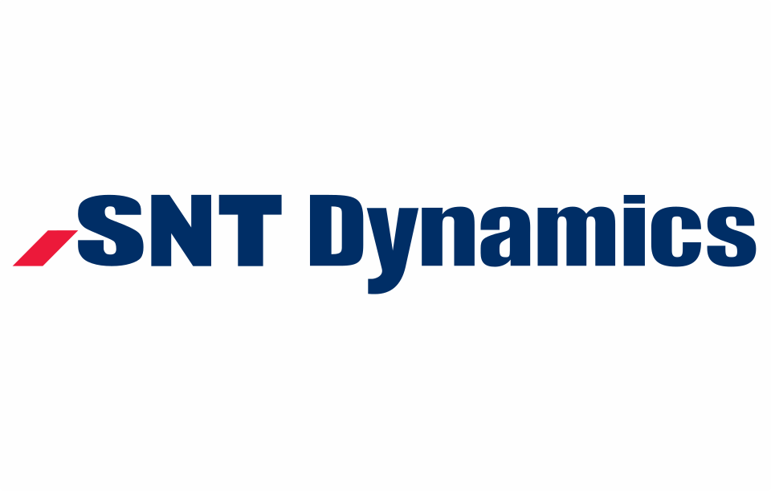

SNT다이내믹스 SNT Dynamics
SNT다이내믹스(SNT Dynamics)는 대한민국 국군의 기관포 및 주요 장갑 차량 변속기 생산을 담당하는 기업이다. 1959년 예화산탄공기총제작소로 설립되었으며 본사는 창원시에 있다.
최종 업데이트

SNT다이내믹스는 어떤 브랜드인가
SNT다이내믹스는 대한민국 국군의 중구경 총포류와 궤도차량용 변속기, 트럭 및 버스용 변속기와 차축을 개발하고 생산해 온 기업이다. 국군의 기관포 및 주요 장갑 차량 변속기 생산을 담당하며 본사는 창원시에 있다.
1959년 예화산탄공기총제작소로 설립되었고, 2003년 삼영열기공업(현 SNT에너지)에 인수합병되었다. 사명은 2005년 S&T중공업, 2021년 SNT중공업을 거쳐 2023년 SNT다이내믹스로 바뀌었다.
2011년에는 홍기봉이 '세계 표준의 날' 대통령표창을 수상했다. 2025년 7월에는 자사주 약 252만 주를 교환대상으로 하는 교환사채(EB)를 발행했고 잔여 자사주 25.1%에 대한 소각이 진행되었다.
SNT다이내믹스는 어떻게 시작되고 성장했나
1959년 예화산탄공기총제작소로 설립되어 대한민국 국군의 중구경 총포류와 궤도차량용 변속기, 트럭 및 버스용 변속기와 차축을 개발, 생산해 왔다. 1998년 11월 30일 부도를 맞았고 2000년 2월 법정관리인가를 받았다.
2003년 삼영열기공업(현 SNT에너지)에 인수합병되었다. 이후 2005년 S&T중공업, 2021년 SNT중공업을 거쳐 2023년 SNT다이내믹스로 사명을 변경했다.
2011년에는 홍기봉이 '세계 표준의 날' 대통령표창을 수상했고, 2025년 7월에는 교환사채(EB)를 발행했다.
SNT다이내믹스의 브랜드 아이덴티티는 무엇인가
대한민국 국군의 중구경 총포류와 궤도차량용 변속기를 개발, 생산하는 기업으로, 1959년 설립 이후 여러 차례 사명을 바꿔 왔다.
SNT다이내믹스는 지금 어떤 상태인가
2023년 사명을 SNT다이내믹스로 변경했다. 같은 해 현장 노동자들이 인력난에도 불구하고 회사가 신규 청년 인력을 채용하지 않는다고 문제를 제기했다.
2023년 말에는 2022년에 이어 희망퇴직 공고를 내고 1964년생과 1965년생 생산직 직원을 대상으로 신청을 받았다. 2025년 7월 자사주 약 252만 주를 교환대상으로 하는 교환사채(EB)를 발행했고 잔여 자사주 25.1%에 대한 소각이 진행되었다.
SNT다이내믹스 로고는 어떻게 변해왔나
자주 묻는 질문
SNT다이내믹스는 어느 나라 브랜드인가요?
SNT다이내믹스는 한국의 에너지·산업재 브랜드입니다.
SNT다이내믹스는 언제 설립되었나요?
SNT다이내믹스는 1959년 설립되었습니다.
SNT다이내믹스의 브랜드 아이덴티티는 무엇인가요?
대한민국 국군의 중구경 총포류와 궤도차량용 변속기를 개발, 생산하는 기업으로, 1959년 설립 이후 여러 차례 사명을 바꿔 왔다.
SNT다이내믹스는 현재 어떤 상태인가요?
2023년 사명을 SNT다이내믹스로 변경했다.
SNT다이내믹스의 본사는 어디에 있나요?
SNT다이내믹스의 본사는 창원시에 있습니다(위키데이터 기준).
SNT다이내믹스의 공식 웹사이트는 어디인가요?
SNT다이내믹스의 공식 웹사이트는 http://www.hisntd.com/cn/main/main.html 입니다.
출처와 검증
SNT다이내믹스 관련 참고: 공식 웹사이트 · 위키데이터 Q7387008 · 한국어 위키백과 · 영어 위키백과. 브랜드명은 한글과 원어를 함께 표기하되 데이터에 없는 표기는 만들지 않습니다. 기원 국가·설립연도는 검수된 정의문에서 확인된 값을 우선하고, 없을 때만 공식 웹사이트 URL이 일치하는 위키데이터 개체의 값을 씁니다. 탄생일의 월·일은 위키데이터, 위키백과 정보상자, 본문 가운데 같은 연월로 확인되는 값만 싣고, 출처끼리 다르면 싣지 않습니다. 위키데이터 값은 2026-11-01 기준입니다.